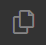
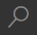

Edit Existing Documentation
Use the following as a reference for how to edit documentation using VS Code. You can choose to write AsciiDoc in a plain text editor, or whichever integrated development environment (IDE) you prefer.
The Documentation team recommends VS Code due to the extensions available, such as Vale, for running automated checks on your documentation.
| See the VS Code documentation for an overview of the user interface, and to get more familiar with how to work in VS Code. |
General Editing Steps Using VS Code
In general, to edit an existing page of the documentation in VS Code:
-
Start VS Code.
-
On the Welcome tab, click Open Folder.
-
Select the folder on your computer where you cloned the documentation repository.
-
Click Select Folder.
If you enabled the Open with Code context menu action when you installed VS Code, you can quickly open a repository from your file explorer instead of following these steps. Open the folder in the file explorer, and from the top level of the repository’s directory, right-click and click Open with Code. -
Create a new working branch for your documentation changes.
-
Click  Explorer.
-
In the Explorer pane, locate the file for the page, partial, or example you want to edit.
-
Double-click the file to open it in an editor pane.
-
Make edits to the content.
For AsciiDoc help, see AsciiDoc Basics. For style conventions, see styleguide:index.adoc.
-
Do one of the following:
-
Press CTRL+S to save the file.
-
Go to to toggle auto-save for your editor.
-
To check your edits, configure and build a local test site.
Use Find and Replace
To speed up making edits to multiple instances of a word, attribute, link, or other text in a file, use VS Code’s Find and Replace feature.
To use Find and Replace:
-
Click  Search.
-
In the Search field, enter the term you want to find and press Enter to search.
-
Click the caret (
>) next to the text field to show the Replace field. -
Enter the term you want to use to replace your search term.
If your search term appears in different casing that you want to preserve through your search results, you can click AB (Preserve Case) on the Replace field to keep the original casing in your replacement. -
Do one of the following:
-
To replace every instance in your search results, next to the Replace field, click Replace All.
-
To replace every instance in a specific file in your search results, point to a filename in your results, and next to the file path, click Replace All when it appears.
-
To replace individual instances in your search results, point to a result, and click Replace when it appears.
-
VS Code’s Find and Replace supports case and whole word matching, as well as regular expressions.
You can also click … (Toggle Search Details) to add or remove directories or individual files from your search results.